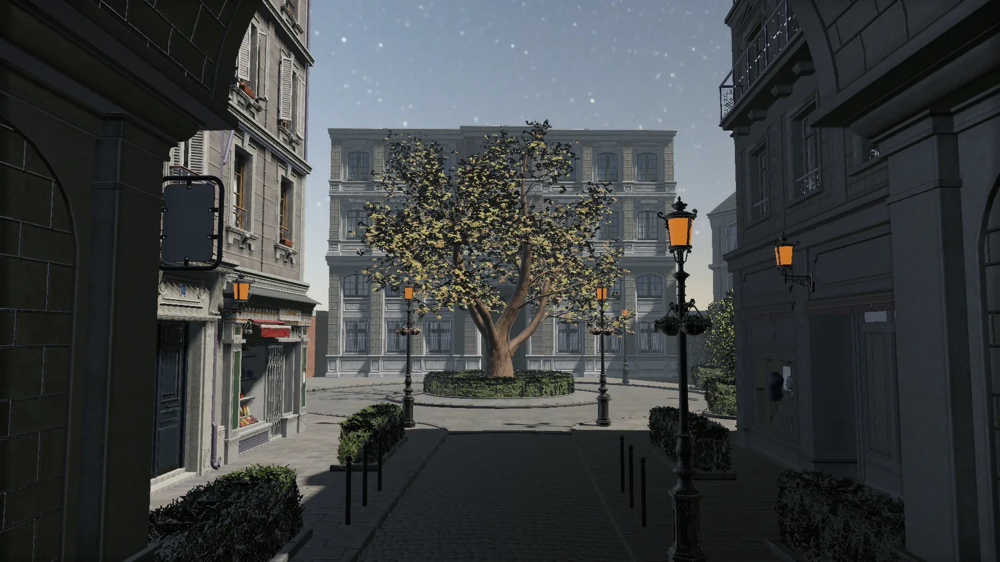
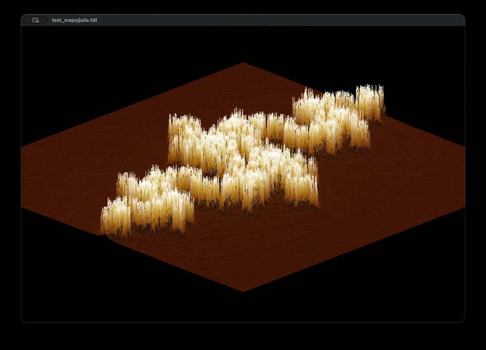

Portfolio
Projects
C/C++로 구현한 렌더링과 데이터 시각화 프로젝트.
Projects

TinyRenderer
C++20 · DirectX 12
실시간 렌더링 엔진

miniRT
C · CPU Ray Tracing
광선 추적과 공간 분할

FdF
C · Wireframe Rendering
좌표 변환과 선 그리기
Portfolio
C/C++로 구현한 렌더링과 데이터 시각화 프로젝트.

C++20 · DirectX 12
실시간 렌더링 엔진
C · CPU Ray Tracing
광선 추적과 공간 분할

C · Wireframe Rendering
좌표 변환과 선 그리기